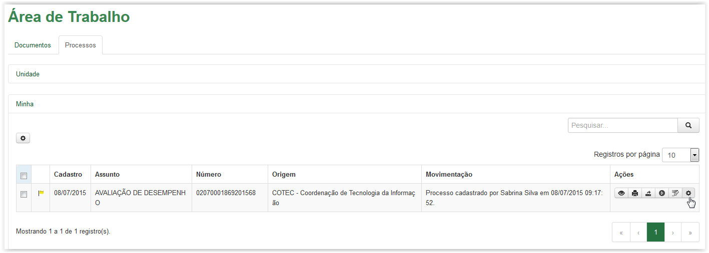
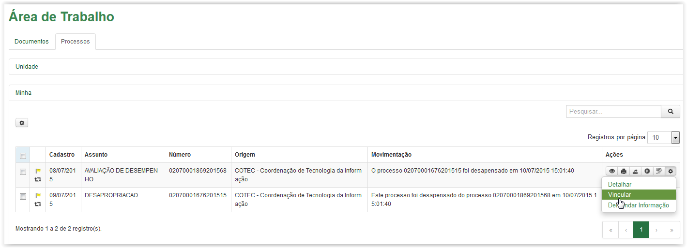
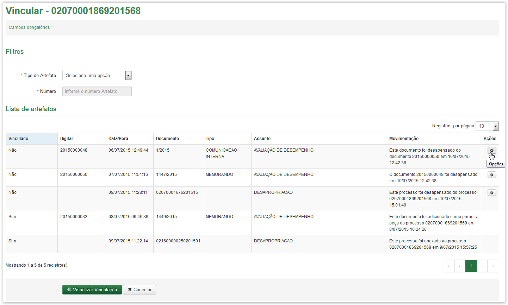
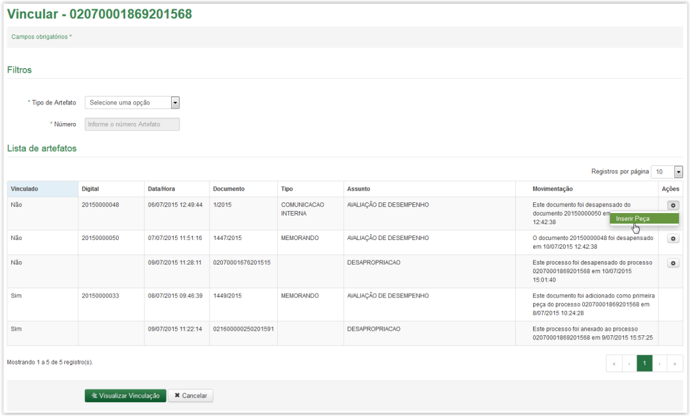
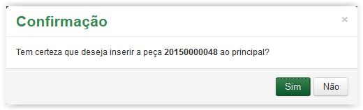
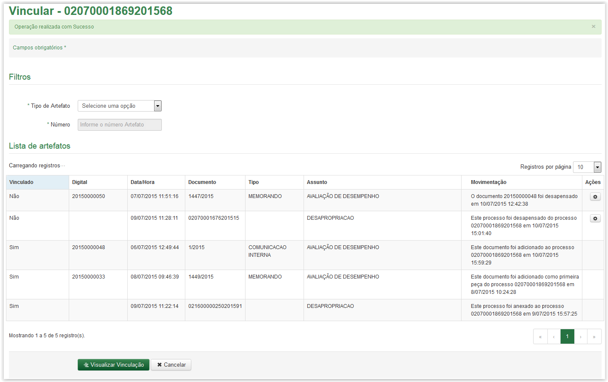

Vincular artefato
Para inserir peça ao processo, clique no ícone  correspondente, disponível na coluna Ações da Área de Trabalho:
correspondente, disponível na coluna Ações da Área de Trabalho:

Aba Processos - Ícone Opções
Após clicar no ícone o sistema apresenta uma lista com algumas opções. Selecione a opção Vincular:

Selecionando a opção Vincular
A tela Vincular é exibida apresentando em seu título o número do processo selecionado. Verifique qual documento deseja inserir como peça (se desejar pode Pesquisar o artefato) e logo após clique no ícone correspondente, disponível na coluna Ações da grid Lista de artefatos.

Tela Vincular - Ícone opções
Após clicar no ícone o sistema apresenta uma lista com algumas opções. Selecione a opção Inserir Peça:

Selecionando a opção Inserir Peça
Após clicar na opção Inserir Peça o sistema apresenta a mensagem de confirmação abaixo:

Mensagem de confirmação
Ao clicar no botão  o sistema retorna para a tela Vincular. Mas ao clicar no botão
o sistema retorna para a tela Vincular. Mas ao clicar no botão  o sistema apresenta uma mensagem de sucesso, altera o status para Sim na coluna Vinculado e registra a alteração na coluna Movimentação:
o sistema apresenta uma mensagem de sucesso, altera o status para Sim na coluna Vinculado e registra a alteração na coluna Movimentação:

Tela Vincular - Grid Lista de Artefatos após o documento ter sido adicionado como peça ao processo
Created with the Personal Edition of HelpNDoc: Produce electronic books easily